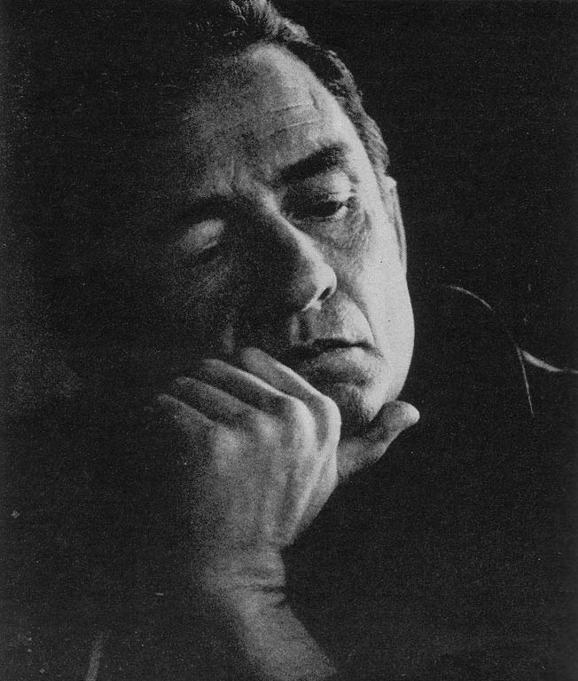

Johnny Cash was the biggest country star of the 1960s and its most unlikely rebel.
He opened the decade as a Columbia Records artist on the road about 300 nights a year.
He closed it with two chart-topping country albums recorded inside prisons and a network TV show of his own.

Table of Contents
- From Dyess to Sun Records
- Ring of Fire and the Early 1960s
- The Hard Years, 1965 to 1967
- Johnny Cash at Folsom Prison and San Quentin
- The TV Show and Legacy
- FAQ
From Dyess to Sun Records
Johnny Cash was born on February 26, 1932, in Kingsland, Arkansas.
His family settled in Dyess, Arkansas, in March 1935.
Cash enlisted in the Air Force on July 7, 1950, and served at Landsberg, West Germany.
He was discharged on July 3, 1954.
Sun Records and the Tennessee Two
He signed with Sun Records in 1955 and began using the name Johnny Cash.
His backing band started as the Tennessee Two, guitarist Luther Perkins and bassist Marshall Grant.
It later became the Tennessee Three.
On December 4, 1956, he joined Elvis Presley, Carl Perkins and Jerry Lee Lewis for the Million Dollar Quartet session.
Moving to Columbia
Cash signed with Columbia Records in 1958.
His amphetamine addiction took hold in the late 1950s.
His family moved to California in 1961, the year he acted in the film Five Minutes to Live.
Ring of Fire and the Early 1960s
The song that defined his early decade started with someone else.
June Carter's sister Anita Carter recorded it first, as "(Love's) Ring of Fire," on a Mercury Records album.
Cash then dreamed of the song with "Mexican horns."
The mariachi horn sound had just been popularized by Herb Alpert's 1962 hit "The Lonely Bull."
June Carter and Merle Kilgore wrote the song.
Cash recorded it on March 25, 1963, at Columbia Studios in Nashville, with producers Don Law and Frank Jones.
The full story is in our Ring of Fire song story.
Columbia released it on April 19, 1963.
It spent seven weeks at number one on the country chart and reached number 17 on the Hot 100.
The 1963 year guide places it among that summer's biggest country crossovers.
Bitter Tears and the Concept Albums
His 1964 album Bitter Tears told stories of Native American history.
"The Ballad of Ira Hayes" from that record reached number three on the country chart.
The Hard Years, 1965 to 1967
Police arrested him in Starkville, Mississippi, on May 11, 1965, and in El Paso, Texas, on October 4, 1965.
That same year a camper fire in Los Padres National Forest burned 508 acres.
His first wife, Vivian Liberto, filed for divorce in 1966, citing his addiction and long absences.
In 1967 a policeman found him near death in a small Georgia village.
June Carter helped him return to his Christian faith and seek treatment.
Their duet "Jackson" won a Grammy in 1967.
Johnny Cash at Folsom Prison and San Quentin
The prison albums turned a rough stretch into a comeback.
Both were live, both were produced by Bob Johnston, and both reached the top of the country albums chart.
At Folsom Prison
Cash recorded the album on January 13, 1968, at Folsom State Prison in California.
He played two shows, at 9:40 a.m. and 12:40 p.m.
Columbia released it on May 6, 1968.
It went to number one on the country albums chart, number 13 on the Billboard 200 and number seven in the UK.
A live "Folsom Prison Blues" single reached number one on the country chart once Columbia edited out a lyric.
The 1969 Grammys honored the song for Best Country Vocal Performance, Male, and the album for Best Album Notes.
See the 1968 year guide for what else shaped that spring.
Cash proposed to June Carter on February 22, 1968, in London, Ontario.
They married on March 1, 1968, in Franklin, Kentucky.
At San Quentin and "A Boy Named Sue"
He recorded At San Quentin on February 24, 1969, at San Quentin State Prison in California.
Columbia released it on June 16, 1969, and it reached number one on both the Top LPs chart and the country albums chart.
"A Boy Named Sue," written by Shel Silverstein, came out as a single on July 2, 1969.
It peaked at number two on the Hot 100, number one on the country chart and number four in the UK.
Cash won Best Country Vocal Performance, Male, for it, and Silverstein won Best Country Song.
The 1969 year guide covers the rest of that year.
| Release | Date | Peak |
|---|---|---|
| "Ring of Fire" | April 19, 1963 | Country No. 1, Hot 100 No. 17 |
| "The Ballad of Ira Hayes" | 1964 | Country No. 3 |
| At Folsom Prison | May 6, 1968 | Country albums No. 1, Billboard 200 No. 13 |
| At San Quentin | June 16, 1969 | Top LPs No. 1, country albums No. 1 |
| "A Boy Named Sue" | July 2, 1969 | Hot 100 No. 2, country No. 1 |
The TV Show and Legacy
The Johnny Cash Show ran on ABC from June 1969 to March 1971.
Guests included Bob Dylan and Louis Armstrong.
Cash used the platform to speak about Vietnam, prison reform and Native American rights.
Cash met Dylan in the mid-1960s.
He later sang on Dylan's Nashville Skyline and wrote its liner notes.
Honors
The Country Music Hall of Fame inducted him in 1980, at age 48, the youngest living inductee.
The Rock and Roll Hall of Fame followed in 1992.
Cash died on September 12, 2003, in Nashville, at age 71.
FAQ
When did Johnny Cash record At Folsom Prison?
Cash recorded the album on January 13, 1968, at Folsom State Prison in California.
He played two shows that day, at 9:40 a.m. and 12:40 p.m.
Columbia released the record on May 6, 1968.
What was Johnny Cash's biggest hit of the 1960s?
"Ring of Fire" spent seven weeks at number one on the country chart in 1963 and reached number 17 on the Hot 100. "A Boy Named Sue" climbed higher on the pop side, peaking at number two on the Hot 100 in 1969.
Who wrote Ring of Fire?
June Carter and Merle Kilgore wrote it.
June's sister Anita Carter recorded it first, as "(Love's) Ring of Fire," before Cash cut his version on March 25, 1963.
When did Johnny Cash marry June Carter?
He proposed to her on February 22, 1968, in London, Ontario.
They married on March 1, 1968, in Franklin, Kentucky.
Is Johnny Cash in the Rock and Roll Hall of Fame?
Yes.
He was inducted as a performer in 1992, with Lyle Lovett presenting.
The Country Music Hall of Fame had already inducted him in 1980, at age 48.
Few artists carried so much of the decade's grit in one voice.
His records sit at the center of the 1960s country story, and the full biography is on Wikipedia.
Back to the 1960smusic.net homepage to explore every genre of the decade.